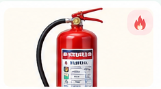
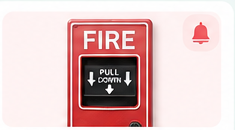
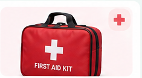
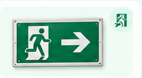
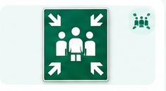
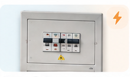

🔥 ดับเพลิง
ถังดับเพลิง
อุปกรณ์สำหรับควบคุมเพลิงระยะเริ่มต้นโดยผู้ที่ได้รับการฝึกและเมื่อสถานการณ์ปลอดภัยพอ
นักเรียนควรรู้จำตำแหน่งไว้ ไม่วางของกีดขวาง และเมื่อพบไฟให้แจ้งผู้ใหญ่/เจ้าหน้าที่และทำตามแผนอพยพก่อน
รู้จักหน้าตา • เข้าใจหน้าที่ • รู้ว่าเมื่อใดควรแจ้งครูหรือเจ้าหน้าที่


อุปกรณ์ฉุกเฉินไม่ใช่ของเล่น หากพบอุปกรณ์ชำรุด ถูกกีดขวาง หรือไม่แน่ใจวิธีใช้ ให้แจ้งครูหรือผู้รับผิดชอบ ไม่ทดลองเอง

อุปกรณ์สำหรับควบคุมเพลิงระยะเริ่มต้นโดยผู้ที่ได้รับการฝึกและเมื่อสถานการณ์ปลอดภัยพอ

ใช้เตือนให้คนในพื้นที่รับรู้เหตุและปฏิบัติตามแผนของโรงเรียน

รวมอุปกรณ์พื้นฐานสำหรับการช่วยเหลือเบื้องต้นโดยผู้ที่รู้วิธีใช้งาน

ช่วยบอกทิศทางไปยังทางออกหรือเส้นทางอพยพที่กำหนด

พื้นที่ที่กำหนดให้รวมกลุ่มหลังการอพยพเพื่อให้ตรวจสอบและรับคำแนะนำต่อ

อุปกรณ์บางชนิดควรจัดการโดยบุคลากรที่รับผิดชอบเท่านั้น
หน้าแผนผังจะแสดงเฉพาะจุดที่มีข้อมูลยืนยัน เพื่อไม่ให้ผู้ใช้จำตำแหน่งผิด
เปิด Safety Map →หลังเรียนรู้แล้ว ไปฝึกสถานการณ์เพื่อใช้ความรู้ในการตัดสินใจ
ไปที่ Training Plan →